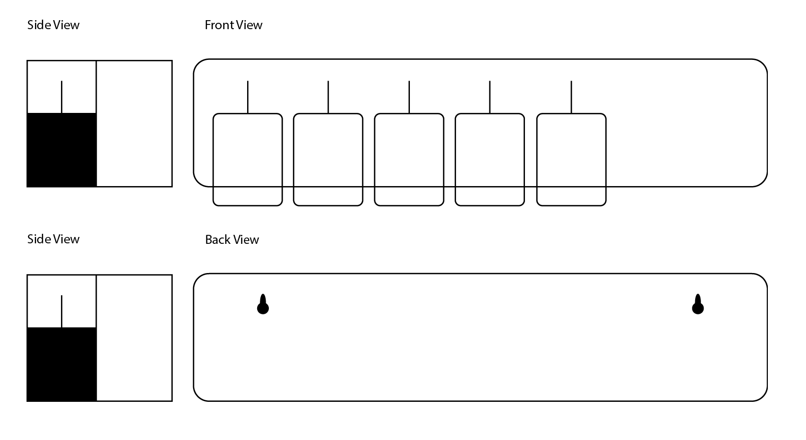
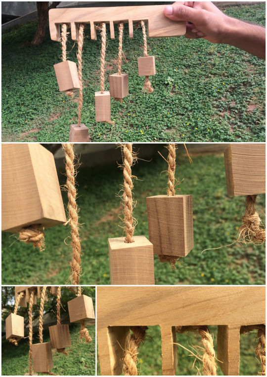

Ethnography
The scientific approach to understanding peoples and cultures with their customs, habits, and mutual differences.
I've done two ethnographic study with two different groups and came out with different perspective to understand the closed world of specific group of people. It has created a good impact on my learning ability to understand user research, user approach, scientific scenarios to deal with different subsystem.
My gaining from this cource have significantly improved the way I obsever the people. Indeed it made me wonder to study more about user everytime before I start any kind of project. Rather than just googling about it.
Ethnography of Pottery Maker at Kudasan, Gandhinagar
Artifact Design
Artifact which represent ethnographic group
← HOME